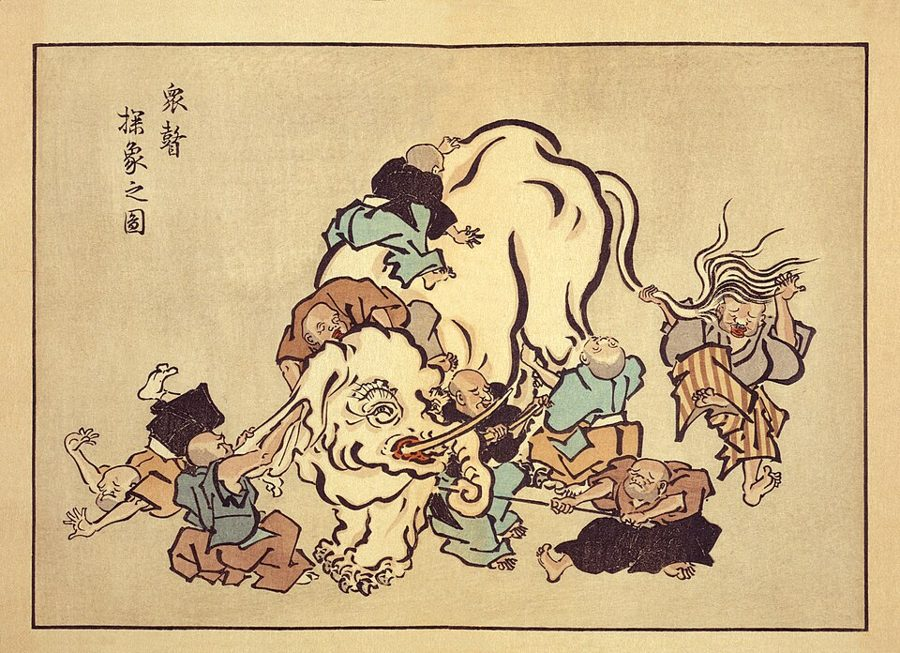

leading edge
… here, not the leading edge.
最前沿
和 cutting edge 差不多。她说只讲核心，不讲前沿。
这一页是书的门口：作者的交代、编者的出版说明和引言。引言只想让你先接受一个想法：系统的行为大多出自它自己的结构，外面推一把、拉一下，只是把本来就藏在里面的行为放出来或压下去。作者拿一只弹簧玩具演示，再把这个想法推到经济衰退、丢市场份额、油价、流感和毒瘾上，她自己也说这些话听着让人不安。读的时候留意哪几句带了限定词，哪几句没带。
这是全书的第一页，还没有讲任何术语。原书在这里有三块：作者 1993 年写的交代，编者 Diana Wright 2008 年写的出版说明，一篇没有小标题的引言。译本把编者说明排成「献词」，把它末尾 Pirsig 的题词挪到了「前言」开头，又给引言加了三个小标题，本站的 §3–§5 就照这三个小标题分。§3 有一整段原文译本没译，见「译本勘误」。
别被带歪：§3 那五条推论说得很满，其中「政治领导人不造成衰退和繁荣」、流感、毒瘾三条没有任何限定。作者自己也说这类话让人深感不安。当诊断的起点好用，当结论就过头了：多数问题是外来冲击和内部结构一起起作用。
一个问题年年复盘、年年怪到外面，到底是外面的错，还是自己的结构？
读的时候带着这几个问题，读完回来对照「检查一下理解」。
这一页是原书的作者说明、编者说明和引言，对应译本的「前言」「献词」和引言三节。粗体是本站给的节名，后面是档和译本字数；下面一行是译本的小标题和这一节在译本电子书里开头的几个字（搜它就能跳过去），再下面是英文原书的小标题和开头几个词，翻纸书用。译本书前的各方赞誉、邱昭良的导读和书末的译者后记，原书没有，本站不做。读完打个勾。
先把这一页用到的两个想法用书外的例子讲一遍。作者拿它们推出什么，读原书时自己看。后面各页用到时会链回这里。
同样是一晚上涌进平时三倍的请求。一个服务前面挂着队列，处理得慢一点，照样撑过去；另一个服务每个请求都直连数据库，连接一满就超时，客户端一超时就重试，请求更多，最后整个挂掉。流量是外来的，可「挂掉」这个行为本来就藏在第二个服务的构造里，流量只是把它放了出来。重试让请求越来越多，这种自己放大自己的结构叫增强回路，第 1 章后半才讲。
作者的说法是：外部的力量能冲击、限制、触发、推动一个系统，但系统怎么回应是它自己的特征；同一个外部事件碰上另一个系统，结果很可能不同。分辨的办法是问：换一个结构，同样的冲击还会这样吗？§3 还顺手给了系统一个口语的定义，正式的在系统。
在这一页：§3 用弹簧和盒子演示这件事，接着推出五条刺耳的推论；§4 说顽固的问题出在结构上，也是同一个想法。
还原论的办法是拆：把问题切成小块，一块一块弄懂，顺着直接的因果链找原因。调试程序时二分定位、写单元测试，都是这一路，好用得很。整体论的办法是看部件之间怎么连、合起来在做什么。两者各有看不见的东西：每个模块的单元测试都过了，接到一起照样可能死锁；反过来，只盯着整体的曲线，也修不好写错的那一行。
作者在 §5 说两种镜头互补，系统视角不比还原论更好。她在 §4 批评的是另一件事：习惯把原因推到外面，找一个开关、一颗药、一项技术把问题变没。§4 预告的「系统陷阱」，她后来改叫「陷阱和机会」，就是第 5 章的系统基模。

在这一页：§4 讲西方偏重还原论、爱怪外因；§5 说两种镜头互补，用盲人摸象收尾。
读英文原书时值得停一下的词和句：熟词生义、Meadows 的口语和比喻。灰色斜体是原句里连续的几个词，在英文电子书里搜它就能找到；标「每个字都认识」的，是每个词都眼熟、合起来意思却变了的，最容易读错。点「记下」收进词本。
对着译本读这五节时，下面这些地方会把人读歪。方框里是译本的原句，在译本电子书里搜它就能找到；灰色斜体是英文原书那一处。只收意思错了、反了、漏了的，措辞上的出入不收。全书的勘误汇总在译本勘误。
… carried out by dozens of creative people …
译本：「我个人在系统思考建模与教学方面30多年」
原文说这本书提炼自三十年来几十位有创造力的人做的建模和教学，她是这个圈子里的一员，不是她个人干了三十多年。归属一换，「这是一个圈子的积累」的意思就成了个人资历。
… I need to acknowledge factionalism as well.
译本：「我还要感谢派系之争」
acknowledge 在这里是承认：说完系统思考能跨越学科，她得承认这个圈子自己分成了很多吵来吵去的学派，所以接着交代她用的是系统动力学一派的语言和符号。
… When the abstract end of systems theory …
译本：「等到系统理论发展到了相对成熟的阶段」
原文：她只对能帮着解决实际问题的分析感兴趣；等系统理论抽象的那一头也能做到这一点，就得另写一本书了。条件是「抽象理论能用来解决实际问题」，不是「理论成熟」。
… as we reach peak oil, face …
译本：「伴随着石油价格的狂飙」
原文是「我们正走到石油峰值」，指全球石油产量见顶、此后下滑的说法，不是油价。这是编者 2008 年的话，后来怎样见「今天怎么看」。同一句的「66 亿人」，译本改成了「迈向70亿」。
… is perhaps our best hope for …
译本：「只有理解了系统的各种行为特征」
原文：系统不论大小，行为方式可以很相似；弄懂这些方式，也许是我们做出持久改变的最好希望。译本丢了「大小系统行为相似」这个要点，又把「也许」说成了「只有」。
… years of progress easily undone in …
译本：「要想积极而持久地保持本土特色文化」
编者在这里设想几类读者的苦恼：好主意被人顶回来的决策者，修好一个问题又冒出新问题的管理者，多年进展几下就被推翻的倡导者，想做出持久的好改变却觉得太难的公民。「本土特色文化」「上有政策、下有对策」原文都没有。
… immersed in the events of the day.
译本：「积极参与到各种活动和项目之中」
events of the day 是每天的时事。原文：她始终泡在时事里，把这些事看成背后往往很复杂的系统表现在外面的行为。她读报找系统的例子，也是这个习惯。
… because their teachings are as relevant now …
译本：「很多甚至已经被时间所验证」
原文只说 1993 年的例子也许有点旧，道理仍然适用；接着交代九十年代初发生了什么，那是作者写稿时的时代。译本加了「很多已被时间验证」，又用「例如」接上苏联解体等事，读来像这些事件是书里的案例。
… The International Panel on Climate Change …
译本：「国际气候变化委员会」
原书自己就把名字写错了，正式名称是 Intergovernmental Panel on Climate Change，中文通称「政府间气候变化专门委员会」。想查它的第一次评估报告，用这个名字搜。
… read the International Herald Tribune and …
译本：「国际先驱导报」
原文是 International Herald Tribune，在巴黎出版的英文国际报纸，中文通常叫《国际先驱论坛报》，2013 年改名《国际纽约时报》。《国际先驱导报》是国内另一份报纸。全书别处出现时也是这样。
… which produced it is left standing …
译本：「你就能很快重新建立起另一家」
原意：工厂拆了，造出它的那套想法原封不动，就会再造出一座工厂；革命推翻了政府，产生它的思维模式没动，那些模式就会重演。译本读成「精神在就能重建」，后半句也成了「难逃被推翻」。这段在译本「前言」开头，原书在编者说明末尾。
… do not solve problems, they manage messes.
译本：「而应善于管理混乱的局势」
Ackoff 原话：管理者碰到的不是一个个独立的问题，而是互相纠缠、不断变化的一团，他管这叫 mess（乱局）；管理者并不解决问题，他们管理乱局。说的是实情，译本改成了「不能只是……而应……」的劝告。
… suppress or release some behavior …
译本：「弹簧自身的结构会使它做出相应的举动」
原文的要点是：行为本来就潜藏在弹簧的结构里，摆弄它的手只是把它压住或放出来。译本说成弹簧对手「做出相应的举动」，像是在回应手。后面那句说人们只盯着手、忽视了弹簧，是译本加的。
… produce their own pattern of behavior …
译本：「以特定的行为模式相互影响」
原文：系统是一组东西，连接的方式让它们随时间产生「自己的」行为模式。「自己的」正是这一节要说的。同段「系统怎么回应是它自己的特征」，译本写成「反馈方式」，原文没有「反馈」，这个词第 1 章才有专门的意思。
… economies, it can be heretical.
译本：「就不那么简单了」
原文：弹簧的事好懂；说到个人、公司、城市、经济，这个想法会被当成异端。难的不是理解，是接受：说一家公司的毛病出在它自己身上，很多人听着刺耳。
… They may be there to scoop …
译本：「其对手可能在逐渐积累起竞争优势」
原文：对手也许正好在那儿，把好处捞走；丢份额的那家至少部分是自己的经营政策造成的。说成对手「在积累优势」，原因又回到了对手身上，这一条要说的正好相反。
… a resistance to and a recognition of …
译本：「一种是顺应系统，另外一种是与其对抗」
原文：这类话有让人深感不安的一面，也有像最朴素常识的一面；这两样，对系统原理的抗拒和认同，来自人人熟悉的两种经验。是同一个读者心里的两种反应，译本拆成了两群人、两种做法。
… we have been taught to analyze, …
译本：「其实，在接受现代的理性分析教育之前」
译本这一句之前少了一段：我们受的训练是分析，顺着因果找直接的原因，靠控制外界解决问题；这种训练很有力量，也让我们把总统、竞争对手、欧佩克、流感和毒品看成问题的根源。没有它，读者只看到两种经验里的一种。
… make a direct translation from systems jargon …
译本：「我们完全可以摒弃繁杂的系统术语」
原文：现代系统理论和电脑、方程绑在一起，掩盖了它讲的道理人人多少都知道；所以常常能把系统术语直接译成传统的老话，§4 开头就是三组。全书后面正要教这些术语。「大道至简」也是译本加的。
… by the time a problem becomes apparent …
译本：「经过一段时间之后，问题会变得更加严重」
原文：因为有反馈延迟，等问题显出来的时候，它可能已经难解决得多，多出来的难度本来可以避免。要点是看见得晚，译本只说时间一长问题变重，也丢了「可能」。
… the solutions are in our hands.
译本：「因为这些想法其实就存在于我们的认知之中」
原文：这想法让人安心，因为解决办法就在我们自己手里；让人不安，因为我们得换一种方式做事，至少换一种方式看和想。译本把安心的理由换成了「这些想法我们早就知道」。
… many more agents than caffeine, alcohol, …
译本：「不管引起上瘾的媒介是咖啡因、酒精」
原文：上瘾可以由远比咖啡因、酒精、尼古丁和毒品多得多的东西引起。第 5 章把「上瘾」当作一个陷阱讲，说的不只是药物。译本缩成了只有这几样。
… also can be transformed, with a little …
译本：「也是实现有效行为改变的“杠杆点”」
原文：她原先叫它们「系统陷阱」，后来加上「和机会」（opportunities，不是「对策」），因为稍懂一点系统，这些结构也能被改造成产生好得多的行为。陷阱是第 5 章，杠杆点是第 6 章，译本把两样混在了一起。
下面是作者在引言和前言里的主张（编者说明是 Diana Wright 的话，不算在内），本站按主张之间的逻辑重排，不按原书顺序；每条后面是节号，拿不准就回书里那一节再读一遍。
弹簧会弹、盒子不会，答案在弹簧自己身上：手只是压住或放出弹簧结构里潜藏的行为。她说这是系统理论的核心洞见。外力可以冲击、限制、触发、推动一个系统，但系统怎么回应是它自己的特征；同一个外部事件碰上另一个系统，结果很可能不同。
§3The system, to a large extent, causes its own behavior!— §3。本站译：系统在很大程度上自己产生自己的行为！
带了限定的：竞争对手「很少」是丢份额的原因，丢的一方「至少部分」怪自己的政策；石油出口国「不是唯一」该为油价上涨负责的。没带限定的：政治领导人不造成衰退和繁荣，流感病毒不是来攻击你，没有哪一个人治得好毒瘾。
§3分析训练教我们顺着因果找外面的原因；可在学会分析之前，我们早就和复杂系统打交道，凭直觉懂它们。所以系统术语常能直译成老话：反馈延迟对「及时一针省九针」，增强回路让赢家通吃对「富者愈富」，多样性对「别把鸡蛋放进一个篮子」。
§3 §4人更愿意把原因推到外面，找一个开关、一颗药、一项技术。盯着外因确实解决过大问题，比如预防天花、增产粮食，但有的办法带来了新问题。饥饿、贫困、失业、毒瘾、战争，没人想要却一直在；她的判断是它们本质上是系统问题，只有看清结构、重新设计它，才会松动。
§4她把肉眼、显微镜、望远镜和系统理论都比作镜头，每片镜头里看见的都真实存在，多一种看法，认识就完整一点。盲人摸象收尾：每人都摸到真实的一块，却各自把象认错了；只知道系统由哪些部件组成，推不出它会怎样。
§5I don’t think the systems way of seeing is better than the reductionist way of thinking.— §5。本站译：我不认为系统的看法比还原论的想法更好。
合起来：碰到反复出现的问题，先别急着找外面的罪魁，问一句：换一个结构，同样的事还会这样吗？这个问题她问得很满，但她也承认外力能把行为放出来，系统视角只是几片镜头中的一片。
处境是本站编的，放在你可能遇到的地方。先自己想，再点开看分析；有的题不只一个答案。全书的情境题汇总在情境题。
一家电商公司的订单服务，连续三年在大促零点挂了二十来分钟。三份复盘的结论都是「流量超出预估」，改进项都是「明年多加机器」。今年预估流量是去年的 1.5 倍，运维按 2 倍备了机器。新来的架构师翻了三年的监控，发现每次都是一个下游服务先变慢，上游的重试一下把请求放大好几倍，而机器数从来不是卡住的地方。
这是外因还是结构？「多加机器」有没有用？
流量是外来的冲击，但「挂」是这套结构的行为：下游一慢，重试就把请求放大，越慢越堵。同样的流量碰上一个有限流、重试会退避的系统，多半只是慢一点。三年都怪流量、都开同一个方子、问题照样重演，这本身就是该看结构的信号。选 C 最稳妥，B 也说得通。
加机器不是没用，它把触发的门槛抬高了；可放大的那条路还在，总有一年流量会越过新的门槛。也别走到另一头：要是哪年流量真是平时的二十倍、哪套系统都扛不住，那就是外因占了大头。分法还是那一问：换一个结构，同样的冲击还会这样吗？
书里对应：§3 （引言）无处不在的系统
一个记账 App，日活两年从 300 万掉到 180 万。去年一个新对手上线，补贴新用户，团队开会一致认为「对手在烧钱抢人」，提议也做补贴。产品经理拉了一份数据：日活下滑在对手上线前半年就开始了，流走的主要是老用户；同一时期，App 加了三轮广告位，同步功能改成付费，应用商店里的一星评论多了一倍。
按作者的说法，丢掉的用户该怎么算？跟着补贴能解决问题吗？
作者对这类事的判断是：竞争对手很少是丢份额的原因，它们在那儿接住便宜，丢的一方至少部分是自己的政策造成的。这里的数据站在她这边：下滑早于对手出现，流走的是被广告和收费推开的老用户，对手只是给了他们一个去处。跟着补贴能拉回一些人，可推人走的那几样不改，补贴一停还会流走。
也要留意「至少部分」：对手的补贴确实可能加快流失，把原因全算到自己头上，同样说过头。先算清两样各占多少：对手上线前后，每月流失的速度变了多少。
书里对应：§3 （引言）无处不在的系统
Meadows 1993 年写成初稿，编者 2008 年整理出版。下面挑出这一页里能被后来的研究或事情检验的说法，分「书里 / 当时 / 今天」几栏，并给一个结论。结论判的是标题里「书里的说法：」后面那一句。全书的这一节汇总在今天怎么看。
读完作者的主张，再看它站不站得住。每一块摆出三样：主流怎么看，作者怎么看，本站的评论。最后一句是本站对这一页的总体判断。
主流看法：经济学家 Ragnar Frisch 1933 年把经济波动分成两半：外来的冲击，和经济自身把冲击传开、变成起伏的机制。他借了 Wicksell 的比喻：拿棍子一下下敲一匹摇摆木马，木马摇起来的样子和棍子的动作很不一样。这和弹簧玩具很像，但这一路的宏观经济学一直是两半都算，冲击和结构一起决定起伏。
作者的看法：系统在很大程度上自己产生行为；政治领导人不造成衰退和繁荣，流感病毒不是来攻击你。§3
本站的评论：当诊断的起点，这句话好用：问题反复出现、换了人还一样，就该看结构。当结论就过头了，她自己也说外部事件能把行为放出来，木马也得有人敲。流感那条，不接触病毒就不会得流感；读成「生病怪自己」就读歪了。读的时候分清：带「很少」「不是唯一」的两条是诊断，不带的三条最好当成说重了的话读。
主流看法：物理学家 P. W. Anderson 1972 年在《科学》上发表《More Is Different》：他接受还原论，万物都服从同一套基本定律；但反对反过来说，以为懂了基本定律就能把一切重新搭出来。规模一大、东西一复杂，每一层都会冒出新的性质，要用新的概念去研究。这篇文章常被当作「涌现」这个想法的经典表述。
作者的看法：系统视角不比还原论更好，二者互补；只知道部件，推不出系统的行为。§5
本站的评论：这是这一页最克制的一句，也最容易读漏。§4 她批评西方偏重还原论、爱找外面的开关，读快了会以为全书在反对分析，其实她批评的是只用一片镜头。程序员两样天天在用：二分定位 bug、写单元测试是还原；每个模块单看没毛病、一上线就出事，是要看整体的时候。Anderson 那篇说明，整体的性质不违反部件的规律，只是从部件推不出来。
主流看法：生态学为这件事争了半个世纪。Robert May 1972 年在《自然》上用随机拼成的模型群落算出：物种越多、相互作用越多，群落越难稳定，和直觉正相反。Tilman、Reich、Knops 2006 年在《自然》上报告明尼苏达草地十年的实验：种的物种越多，整片草地每年的产量越稳；单个物种反而更不稳，整体靠物种之间此消彼长，像投资组合。2007 年就有人拿别的实验提出异议。
作者的看法：多样、有多条通路和冗余的系统，比单一的系统更稳，受外部冲击时没那么脆弱。§4
本站的评论：两边不全打架：May 说的是随便拼起来的复杂系统，Tilman 量的是总产量逐年稳不稳，和「受冲击不垮」相通，但不等同。程序员熟悉另一面：多副本、多机房让服务不容易一下全挂，可依赖越密，一处出错也越容易传开。这句老话方向对，「多样」还得配上「各部分别绑得太死」。
本站的总体看法：引言给的是一副眼镜，不是一套证明。「去看结构」这个提示很值钱，五条推论里不带限定的几条，要当成说重了的话读。编者关于《增长的极限》和石油峰值的话是 2008 年的口气，今天看说早了、说满了。§5「互补，不是更好」是全页最该记住的一句。
先在心里答，再点开。答错的那题，回书里把对应那一节再读一遍。
行为藏在弹簧的结构里，手只是把它放出来或压住。同样的外力碰上不同的结构，结果不同。
前一句带了限定：「很少」，而且丢的一方「至少部分」怪自己的政策。后一句没有限定，说得更满。
不安来自分析训练：习惯顺着因果找外面的原因。像常识，是因为在学会分析之前，人早就凭直觉和复杂系统打交道。前一半译本没译。
反馈有延迟：等问题显出来时，可能已经比早动手难解决得多。
它们是系统结构产生的行为，没人想要却一直在。要看清结构、重新设计它，而不是继续找外面的罪魁。
不。她说两者互补，就像肉眼、显微镜、望远镜，各自看见的都真实存在。
编者 Diana Wright 2008 年说的，不是作者。
用一句话说这一页：
想一想：你身边有没有一个年年出、年年怪到外面的问题（线上故障、项目延期、家里的账）？换一个结构，同样的外因还会造成它吗？要换的那一处在哪？
读过又忘了，从这里想起来。挑的是这一页最值得记住的例子和说法，不按原书顺序；每条后面是节号，想细看就回书里那一节。全书各页的这一节都收在全书回顾。
一句话：系统在很大程度上自己产生自己的行为；碰到反复出现的问题，先问换一个结构还会不会这样。
同样把下面的手拿开，弹簧上下跳，盒子一动不动。行为藏在弹簧的结构里，手只是把它放出来。
§3竞争对手很少是丢份额的原因，丢的一方至少部分怪自己的政策。「政治领导人不造成衰退」那条，她没加限定。
§3系统的道理常能直译成老话：反馈延迟对一针及时，增强回路对富者愈富，多样性对别把鸡蛋放进一个篮子。
§4饥饿、贫困、毒瘾、战争，没人想要却一直在，作者说它们出在结构上。贫困的比例三十年里降了一大截，「赶不走」要打折听。
§4肉眼、显微镜、望远镜、系统理论，各看见真实的一部分。系统视角不比还原论好，两者互补。
§5每人摸到真实的一块，却各自把象认错了。只知道部件，推不出整体会怎样。
§5